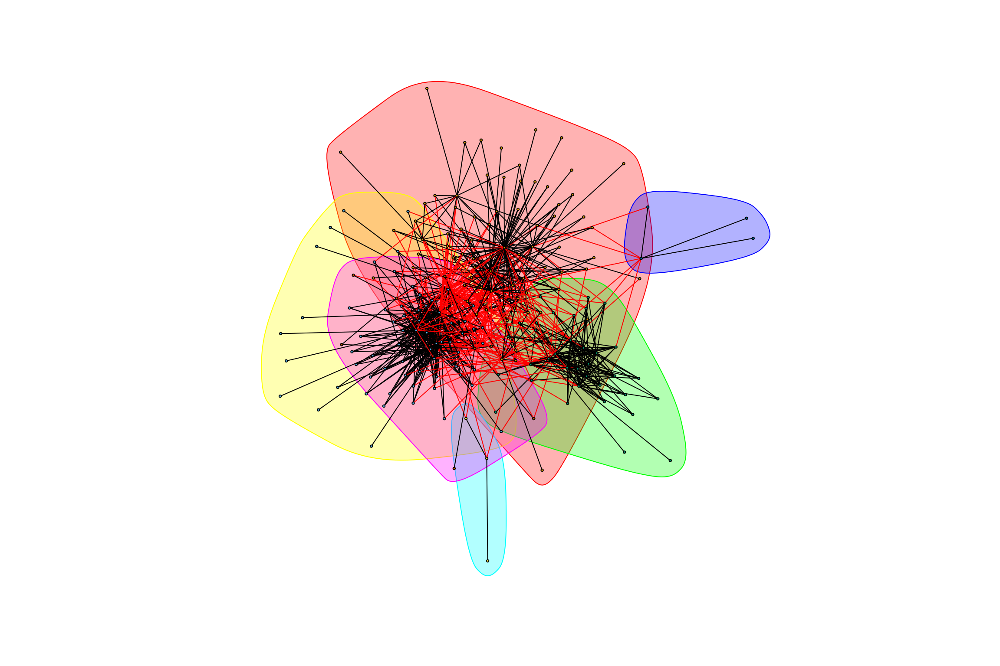

Bacteria Network Analysis
library(data.table, warn.conflicts = FALSE)
library(igraph, warn.conflicts = FALSE)
library(phyloseq, warn.conflicts = FALSE)Data Preparation
taxa is the look-up table for the OTUs. cooccurrence_data contains pairwise-Spearman correlation ranks for pairs of OTUs.
phylo_data <- readRDS("data/rare_b.rds")
taxa <- tax_table(phylo_data)
cooccurrence_data <- data.table(read.table("data/bacteria/bacteria_cooccurrence.tsv",
col.names = c("treatment", "OTU_1", "OTU_2", "rho", "p")))We process coocurrence_data by removing OTU interactions with non-significant \(\rho\) values by filtering out those with a \(p\)-value less than \(0.05\), then filtering out cyanobacteria and choloroplast data, as well as all observations from bird samples:
cooccurrence_data <- cooccurrence_data[p <= 0.1, -5] # Remove p-values from table
cooccurrence_data <- cooccurrence_data[order(treatment, OTU_1, OTU_2)]
taxa <- subset_taxa(taxa, !(Order %in% c("Cyanobacteria","Chloroplast")))
complete_data <- cooccurrence_data[OTU_1 %in% rownames(taxa) | OTU_2 %in% rownames(taxa)]
bird_data <- cooccurrence_data[treatment == "Bird", ]
complete_data <- cooccurrence_data[treatment != "Bird", ]We can then remove all edges that are \(\textit{not}\) connected to the indicated OTUs of interest:
otus_of_interest <- c("Acinetobacter", "Gluconobacter", "Neokomagataea", "erwinia", "Pantoea", "resenbergiella", "Asaia", "Lactobacillus", "Pseudomonas")
otus_of_interest <- taxa[apply(taxa, 1, FUN = function(x){any(x %in% otus_of_interest)}),]
trimmed_data <- cooccurrence_data[OTU_1 %in% rownames(otus_of_interest) | OTU_2 %in% rownames(otus_of_interest)]We seperate the coocurrence data into a positive and negative group, as we can’t give equal weight between the two types of associations.
trimmed_positive_weights <- trimmed_data[trimmed_data[['rho']] > 0]trimmed_negative_weights <- trimmed_data[trimmed_data[['rho']] < 0]We’ll look at the positive and negative networks for each of the three treatments, as well as when all the treatments are combined together.
Networks for Species of Interest
Positive weights
We create a directed graph weighted by Spearman correlation for the Exposed treatment for those OTUs that are positively correlated to each other:
exposed_data_positive <- trimmed_positive_weights[treatment == "Exposed"][,-1]
gr_exposed_positive <- graph.data.frame(exposed_data_positive, directed = FALSE)
plot(gr_exposed_positive, vertex.size = 3,
vertex.label = NA)caged_data_positive <- trimmed_positive_weights[treatment == "Caged"][,-1]
gr_caged_positive <- graph.data.frame(caged_data_positive, directed = FALSE)
bagged_data_positive <- trimmed_positive_weights[treatment == "Bagged"][,-1]
gr_bagged_positive <- graph.data.frame(bagged_data_positive, directed = FALSE)To determine communities, we use cluster_fast_greedy, which does greedy (local) optimization of the graph’s modularity score. For each of the communities, we list the highest degree OTU within that community, as well as the other OTUs within it.
graph_hot_otus <- function(graph_object){
communities_object <- cluster_fast_greedy(graph_object, weights = E(graph_object)$rho)
hot_otus <- vector
for (community in communities(communities_object)){
sub_graph <- induced.subgraph(graph = graph_object,
v = community, impl = "auto")
highest_degree_otu <- V(sub_graph)[which.max(degree(sub_graph))]$name
hot_otus <- c(hot_otus, highest_degree_otu)
print(paste("Highest degree OTU was", highest_degree_otu, "(degree =",
degree(sub_graph, highest_degree_otu), "):"))
}
plot(communities_object, graph_object,
layout = layout.fruchterman.reingold(graph_object),
rescaled = TRUE,
vertex.size = ifelse(V(graph_object) %in% hot_otus, 5, 1),
vertex.label = ifelse(V(graph_object) %in% hot_otus, V(graph_object)$id, NA),
vertex.label.cex = 2
)
return(paste("modularity of graph = ", modularity(graph_object, membership(communities_object)), sep=""))
}graph_hot_otus(gr_exposed_positive)## [1] "Highest degree OTU was OTU_4191 (degree = 12 ):"
## [1] "Highest degree OTU was OTU_20 (degree = 19 ):"
## [1] "Highest degree OTU was OTU_21 (degree = 30 ):"
## [1] "Highest degree OTU was OTU_66 (degree = 3 ):"
## [1] "Highest degree OTU was OTU_9 (degree = 7 ):"## [1] "modularity of graph = 0.446036097345896"graph_hot_otus(gr_bagged_positive)## [1] "Highest degree OTU was OTU_18 (degree = 15 ):"
## [1] "Highest degree OTU was OTU_21 (degree = 27 ):"
## [1] "Highest degree OTU was OTU_5823 (degree = 16 ):"
## [1] "Highest degree OTU was OTU_4036 (degree = 3 ):"## [1] "modularity of graph = 0.491073199761952"graph_hot_otus(gr_caged_positive)## [1] "Highest degree OTU was OTU_64 (degree = 30 ):"
## [1] "Highest degree OTU was OTU_44 (degree = 14 ):"
## [1] "Highest degree OTU was OTU_4036 (degree = 13 ):"
## [1] "Highest degree OTU was OTU_3646 (degree = 11 ):"
## [1] "Highest degree OTU was OTU_5600 (degree = 6 ):"## [1] "modularity of graph = 0.403231500562393"Negative Weights
We repeat the above process for the negatively correlated OTUs:
exposed_data_negative <- trimmed_negative_weights[treatment == "Exposed"][, -1]
exposed_data_negative[[3]] <- abs(exposed_data_negative[[3]])
gr_exposed_negative <- graph.data.frame(exposed_data_negative, directed = FALSE)
bagged_data_negative <- trimmed_negative_weights[treatment == "Bagged"][, -1]
bagged_data_negative[[3]] <- abs(bagged_data_negative[[3]])
gr_bagged_negative <- graph.data.frame(bagged_data_negative, directed = FALSE)
caged_data_negative <- trimmed_negative_weights[treatment == "Caged"][, -1]
caged_data_negative[[3]] <- abs(caged_data_negative[[3]])
gr_caged_negative <- graph.data.frame(caged_data_negative, directed = FALSE)hot_otus <- graph_hot_otus(gr_exposed_negative)## [1] "Highest degree OTU was OTU_21 (degree = 5 ):"
## [1] "Highest degree OTU was OTU_4337 (degree = 4 ):"
## [1] "Highest degree OTU was OTU_6 (degree = 14 ):"
## [1] "Highest degree OTU was OTU_3986 (degree = 9 ):"
## [1] "Highest degree OTU was OTU_5398 (degree = 2 ):"
## [1] "Highest degree OTU was OTU_3646 (degree = 1 ):"
## [1] "Highest degree OTU was OTU_3478 (degree = 3 ):"
## [1] "Highest degree OTU was OTU_9 (degree = 3 ):"hot_otus <- graph_hot_otus(gr_bagged_negative)## [1] "Highest degree OTU was OTU_4161 (degree = 5 ):"
## [1] "Highest degree OTU was OTU_8 (degree = 7 ):"
## [1] "Highest degree OTU was OTU_6 (degree = 10 ):"
## [1] "Highest degree OTU was OTU_3505 (degree = 3 ):"
## [1] "Highest degree OTU was OTU_64 (degree = 4 ):"
## [1] "Highest degree OTU was OTU_21 (degree = 4 ):"hot_otus <- graph_hot_otus(gr_caged_negative)## [1] "Highest degree OTU was OTU_5398 (degree = 3 ):"
## [1] "Highest degree OTU was OTU_4036 (degree = 3 ):"
## [1] "Highest degree OTU was OTU_5302 (degree = 4 ):"
## [1] "Highest degree OTU was OTU_2168 (degree = 2 ):"
## [1] "Highest degree OTU was OTU_4938 (degree = 3 ):"
## [1] "Highest degree OTU was OTU_20 (degree = 3 ):"
## [1] "Highest degree OTU was OTU_44 (degree = 3 ):"Networks with Combined Treatments
We will now look at all treatments together. Note that data points from Bird samples have already been removed.
Positive Weights
trimmed_all_positive <- trimmed_positive_weights[, -1]
gr_trimmed_all_positive <- graph.data.frame(trimmed_all_positive, directed = FALSE)Because all the treatments are being combined into one graph, there can be multiple (parallel) edges between OTUs. The clustering algorithm we have been using requires that there not be multiple edges between OTUs. We will collapse multiple edges by taking their mean - that is the mean correlation of the two OTUs across all treatments. (Are there potential problems with this collapsing rule?)
gr_trimmed_all_positive <- simplify(gr_trimmed_all_positive,
edge.attr.comb = "mean")
graph_hot_otus(gr_trimmed_all_positive)## [1] "Highest degree OTU was OTU_20 (degree = 51 ):"
## [1] "Highest degree OTU was OTU_21 (degree = 44 ):"
## [1] "Highest degree OTU was OTU_4036 (degree = 23 ):"
## [1] "Highest degree OTU was OTU_66 (degree = 2 ):"
## [1] "Highest degree OTU was OTU_38 (degree = 3 ):"
## [1] "Highest degree OTU was OTU_338 (degree = 7 ):"
## [1] "modularity of graph = 0.38412258553213"What’s interesting here is that the graph has a lot of “spokes,” which hints at important OTUs.
Negative Weights
trimmed_all_negative <- trimmed_negative_weights[, -1]
trimmed_all_negative[[3]] <- abs(trimmed_all_negative[[3]])
gr_trimmed_all_negative <- graph.data.frame(trimmed_all_negative, directed = FALSE)
gr_trimmed_all_negative <- simplify(gr_trimmed_all_negative,
edge.attr.comb = "mean")
graph_hot_otus(gr_trimmed_all_negative)## [1] "Highest degree OTU was OTU_4337 (degree = 7 ):"
## [1] "Highest degree OTU was OTU_3505 (degree = 8 ):"
## [1] "Highest degree OTU was OTU_6 (degree = 18 ):"
## [1] "Highest degree OTU was OTU_64 (degree = 10 ):"
## [1] "Highest degree OTU was OTU_5629 (degree = 8 ):"
## [1] "Highest degree OTU was OTU_4036 (degree = 9 ):"
## [1] "Highest degree OTU was OTU_44 (degree = 3 ):"## [1] "modularity of graph = 0.345041551246537"Complete Data (all species)
We reproduce the above analysis on the complete data sat. Again, we separate the data into positive and negative networks:
complete_positive_weights <- complete_data[complete_data[['rho']] > 0]complete_negative_weights <- complete_data[complete_data[['rho']] < 0]Positive Weights
complete_exposed_positive <- complete_positive_weights[treatment == "Exposed"][,-1]
gr_complete_exposed_positive <- graph.data.frame(complete_exposed_positive, directed = FALSE)
complete_caged_positive <- complete_positive_weights[treatment == "Caged"][,-1]
gr_complete_caged_positive <- graph.data.frame(complete_caged_positive, directed = FALSE)
complete_bagged_positive <- complete_positive_weights[treatment == "Bagged"][,-1]
gr_complete_bagged_positive <- graph.data.frame(complete_bagged_positive, directed = FALSE)
graph_hot_otus(gr_complete_exposed_positive)## [1] "Highest degree OTU was OTU_18 (degree = 14 ):"
## [1] "Highest degree OTU was OTU_5806 (degree = 27 ):"
## [1] "Highest degree OTU was OTU_5498 (degree = 22 ):"
## [1] "Highest degree OTU was OTU_1759 (degree = 7 ):"
## [1] "Highest degree OTU was OTU_6 (degree = 11 ):"## [1] "modularity of graph = 0.415087454793783"graph_hot_otus(gr_complete_caged_positive)## [1] "Highest degree OTU was OTU_4036 (degree = 13 ):"
## [1] "Highest degree OTU was OTU_42 (degree = 22 ):"
## [1] "Highest degree OTU was OTU_5398 (degree = 31 ):"
## [1] "Highest degree OTU was OTU_4218 (degree = 13 ):"## [1] "modularity of graph = 0.353623308939668"graph_hot_otus(gr_complete_bagged_positive)## [1] "Highest degree OTU was OTU_43 (degree = 18 ):"
## [1] "Highest degree OTU was OTU_5 (degree = 6 ):"
## [1] "Highest degree OTU was OTU_21 (degree = 28 ):"
## [1] "Highest degree OTU was OTU_4036 (degree = 2 ):"
## [1] "Highest degree OTU was OTU_13 (degree = 15 ):"## [1] "modularity of graph = 0.447362654613719"Negative Weights
complete_exposed_negative <- complete_negative_weights[treatment == "Exposed"][,-1]
complete_exposed_negative[[3]] <- abs(complete_exposed_negative[[3]])
gr_complete_exposed_negative <- graph.data.frame(complete_exposed_negative, directed = FALSE)
complete_caged_negative <- complete_negative_weights[treatment == "Caged"][,-1]
complete_caged_negative[[3]] <- abs(complete_caged_negative[[3]])
gr_complete_caged_negative <- graph.data.frame(complete_caged_negative, directed = FALSE)
complete_bagged_negative <- complete_negative_weights[treatment == "Bagged"][,-1]
complete_bagged_negative[[3]] <- abs(complete_bagged_negative[[3]])
gr_complete_bagged_negative <- graph.data.frame(complete_bagged_negative, directed = FALSE)graph_hot_otus(gr_complete_exposed_negative)## [1] "Highest degree OTU was OTU_172 (degree = 8 ):"
## [1] "Highest degree OTU was OTU_4153 (degree = 4 ):"
## [1] "Highest degree OTU was OTU_3986 (degree = 7 ):"
## [1] "Highest degree OTU was OTU_6 (degree = 12 ):"
## [1] "Highest degree OTU was OTU_22 (degree = 8 ):"
## [1] "Highest degree OTU was OTU_49 (degree = 2 ):"
## [1] "Highest degree OTU was OTU_5755 (degree = 2 ):"
## [1] "Highest degree OTU was OTU_214 (degree = 2 ):"## [1] "modularity of graph = 0.41341566635888"graph_hot_otus(gr_complete_caged_negative)## [1] "Highest degree OTU was OTU_22 (degree = 4 ):"
## [1] "Highest degree OTU was OTU_4161 (degree = 10 ):"
## [1] "Highest degree OTU was OTU_4227 (degree = 10 ):"
## [1] "Highest degree OTU was OTU_2168 (degree = 3 ):"
## [1] "Highest degree OTU was OTU_5 (degree = 10 ):"
## [1] "Highest degree OTU was OTU_5806 (degree = 5 ):"
## [1] "Highest degree OTU was OTU_28 (degree = 4 ):"
## [1] "Highest degree OTU was OTU_5702 (degree = 1 ):"## [1] "modularity of graph = 0.470583752476757"graph_hot_otus(gr_complete_bagged_negative)## [1] "Highest degree OTU was OTU_8 (degree = 5 ):"
## [1] "Highest degree OTU was OTU_4938 (degree = 7 ):"
## [1] "Highest degree OTU was OTU_5 (degree = 13 ):"
## [1] "Highest degree OTU was OTU_4036 (degree = 5 ):"
## [1] "Highest degree OTU was OTU_172 (degree = 2 ):"
## [1] "Highest degree OTU was OTU_5098 (degree = 2 ):"
## [1] "Highest degree OTU was OTU_2168 (degree = 5 ):"## [1] "modularity of graph = 0.447864925492709"Networks with Combined Treatments
Positive Weights
complete_all_positive <- complete_positive_weights[, -1]
gr_complete_all_positive <- graph.data.frame(complete_all_positive, directed = FALSE)
gr_complete_all_positive <- simplify(gr_complete_all_positive,
edge.attr.comb = "mean")
graph_hot_otus(gr_complete_all_positive)## [1] "Highest degree OTU was OTU_4218 (degree = 14 ):"
## [1] "Highest degree OTU was OTU_45 (degree = 14 ):"
## [1] "Highest degree OTU was OTU_3425 (degree = 2 ):"
## [1] "Highest degree OTU was OTU_42 (degree = 45 ):"
## [1] "Highest degree OTU was OTU_21 (degree = 44 ):"
## [1] "Highest degree OTU was OTU_6 (degree = 11 ):"
## [1] "modularity of graph = 0.309733683236746"Negative Weights
complete_all_negative <- complete_negative_weights[, -1]
complete_all_negative[[3]] <- abs(complete_all_negative[[3]])
gr_complete_all_negative <- graph.data.frame(complete_all_negative, directed = FALSE)
gr_complete_all_negative <- simplify(gr_complete_all_negative,
edge.attr.comb = "mean")
graph_hot_otus(gr_complete_all_negative)## [1] "Highest degree OTU was OTU_4227 (degree = 12 ):"
## [1] "Highest degree OTU was OTU_5806 (degree = 12 ):"
## [1] "Highest degree OTU was OTU_6 (degree = 11 ):"
## [1] "Highest degree OTU was OTU_5 (degree = 22 ):"
## [1] "Highest degree OTU was OTU_5553 (degree = 6 ):"
## [1] "Highest degree OTU was OTU_5702 (degree = 3 ):"
## [1] "Highest degree OTU was OTU_4161 (degree = 15 ):"## [1] "modularity of graph = 0.286692084892092"Modularity
Paul Villanueva and
Schuyler Smith
Ph.D. Students - Bioinformatics and Computational Biology
Iowa State University. Ames, IA.